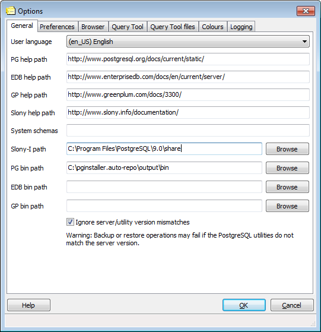

Options pgAdmin - Onglet 1 (Général)

- Langue de l'utilisateur - Cette option vous permet de modifier
la langue utilisée dans l'interface utilisateur de pgAdmin.
- Chemin de l'aide PG - Cette option est utilisée pour indiquer le
chemin vers les fichiers d'aide de PostgreSQL. Cela peut être une URL ou un
répertoire contenant les fichiers d'aide au format HTML (notez que certains
navigateurs ont besoin de la notation file:///chemin/vers/les/fichiers/locaux/
alors que d'autres se satisfont de /chemin/vers/les/fichiers/locaux/), ou
le chemin vers un fichier .chm (sur Windows), un projet HTML Help (.hhp) ou
une archive Zip contenant les fichiers HTML et le projet HTML Help. L'aide
de PostgreSQL est utilisée lorsqu'elle est sélectionnée dans le menu d'aide
ou lorsque vous travaillez avec certains objets de la base de données sur des
serveurs PostgreSQL.
- Chemin de l'aide EDB - Cette option est utilisé pour indiquer le
chemin vers les fichiers d'aide d'EnterpriseDB et se configure de la même
façon que le chemin de l'aide PG. L'aide EnterpriseDB est utilisée
lorsqu'elle est sélectionnée dans le menu d'aide ou lorsque vous travaillez
avec certains objets de la base de données sur des serveurs EnterpriseDB.
- Chemin de l'aide GP - Cette option est utilisé pour indiquer le
chemin vers les fichiers d'aide de Greenplum et se configure de la même
façon que le chemin de l'aide PG. L'aide Greenplum est utilisée
lorsqu'elle est sélectionnée dans le menu d'aide ou lorsque vous travaillez
avec certains objets de la base de données sur des serveurs Greenplum.
- Chemin de l'aide Slony - Cette option est utilisé pour indiquer le
chemin vers les fichiers d'aide de Slony et se configure de la même
façon que le chemin de l'aide PG. L'aide Slony est utilisée
lorsqu'elle est sélectionnée dans le menu d'aide.
- Schémas systèmes - Vous pouvez supprimer l'affichage des schémas
supplémentaires en les déclarant dans un schéma système. Ce champ accepte
une liste de chaînes séparées par des virgules.
- Chemin Slony-I - Pour activer la création de clusters de
réplication Slony-I dans pgAdmin III, vous devez indiquer le chemin vers le
répertoire d'installation des scripts de Slony-I. Si aucun script valide
n'est trouvé, seule l'ajout dans des clusters existants est possible.
- Chemin PG - Ceci doit être configuré avec le chemin des outils
standards de PostgreSQL pg_dump, pg_restore et pg_dumpall. pgAdmin les
utilisera pour sauvegarder et restaurer vos bases de données PostgreSQL. Si
ce chemin n'est pas configuré, pgAdmin tentera de trouver les outils dans son
répertoire d'installation, le répertoire des astuces configurées par une
installation locale de PostgreSQL (sur Windows) et dans le chemin système.
- Chemin EDB - Ceci doit être configuré avec le chemine des outils
EnterpriseDB pg_dump, pg_restore et pg_dumpall. pgAdmin les utilisera pour
sauvegarder et restaurer vos bases de données EnterpriseDB. Si ce chemin
n'est pas configuré, pgAdmin tentera de trouver les outils dans les
emplacements standards utilisés par EnterpriseDB.
- Chemin GP - Ceci doit être configuré avec le chemine des outils
Greenplum pg_dump, pg_restore et pg_dumpall. pgAdmin les utilisera pour
sauvegarder et restaurer vos bases de données Greenplum. Si ce chemin
n'est pas configuré, pgAdmin tentera de trouver les outils dans les
emplacements standards utilisés par Greenplum.
- Ignorer les différences de version serveur/outil - Si coché,
pgAdmin utilisera l'option -i pour les outils tels que pg_dump qui
permet aux outils d'une version d'être utilisés avec un serveur d'une
autre version. Cette option devrait être utilisée avec beaucoup de prudence
car elle peut causer des erreurs lors de la sauvegarde ou lors de la
restauration.